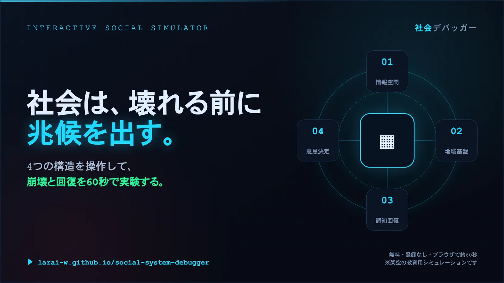

Interactive Social Simulator
An educational simulator. Move four structures and watch collapse and recovery play out in about 60 seconds.
Free, no sign-up, runs in the browser. Nothing leaves your device.

One failing structure rarely topples a society. What topples it is several thinning at once.
PAGE 01
How fragmentation and adversarial framing erode the ability to agree.
PAGE 02
Cut redundancy and lost carriers advance invisibly in ordinary times.
PAGE 03
What a society regains when the habit of checking returns.
PAGE 04
The same volume of voice lands differently depending on where it reaches.
The teaching materials already exist. Bring them in as they are.
Handling how societies break carries a responsibility for how it is written.
Open source. Feedback from actually using it matters most.
Bug reports, ideas, and stories from using it in class are welcome. Half-formed thoughts are fine.